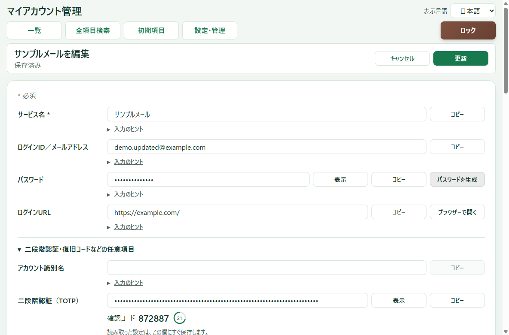
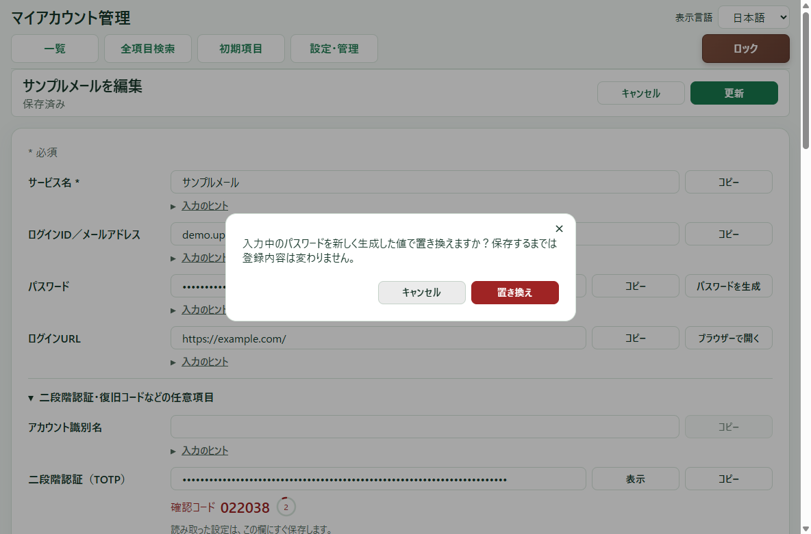
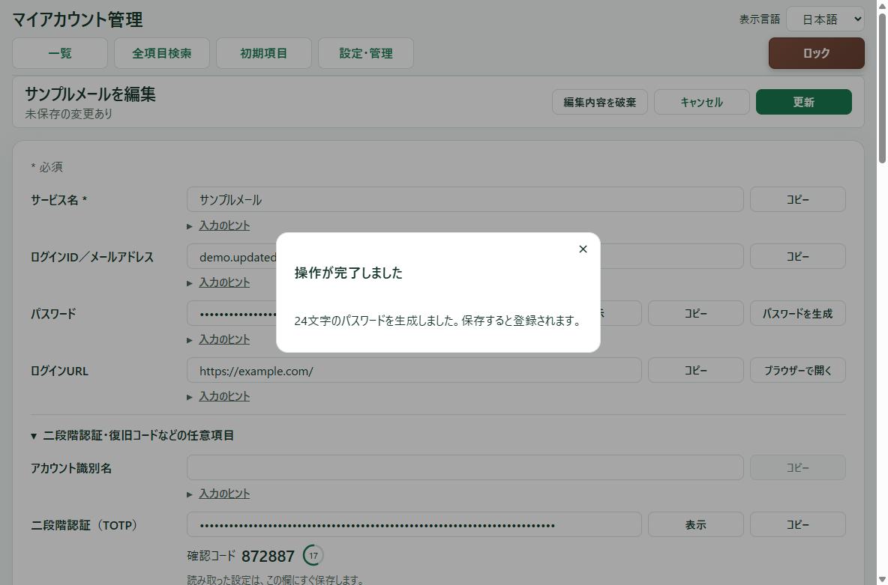
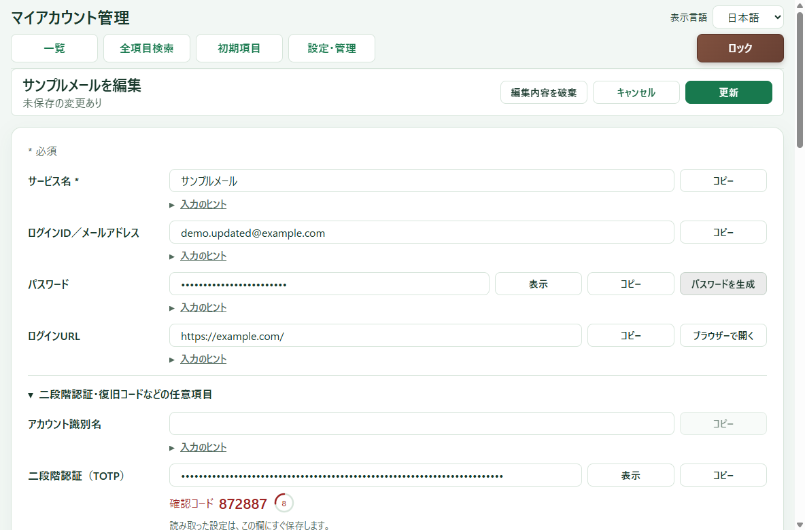
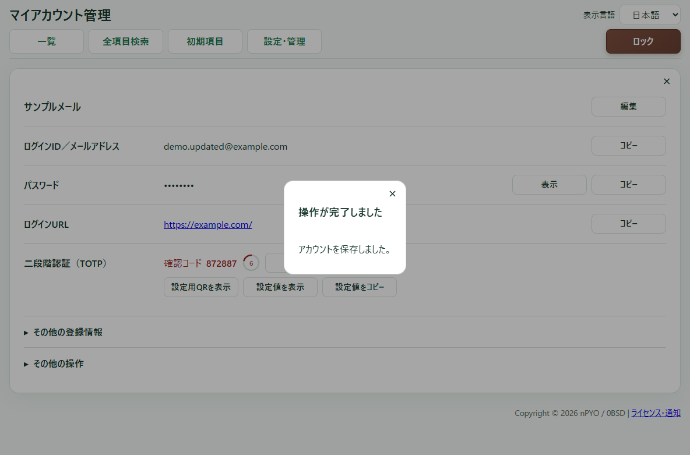
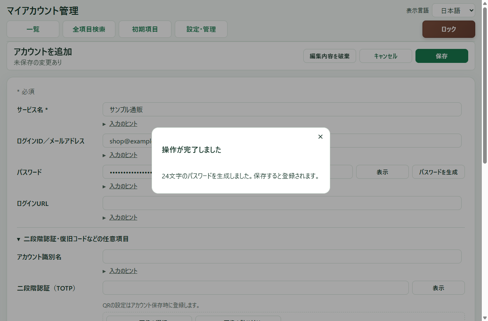
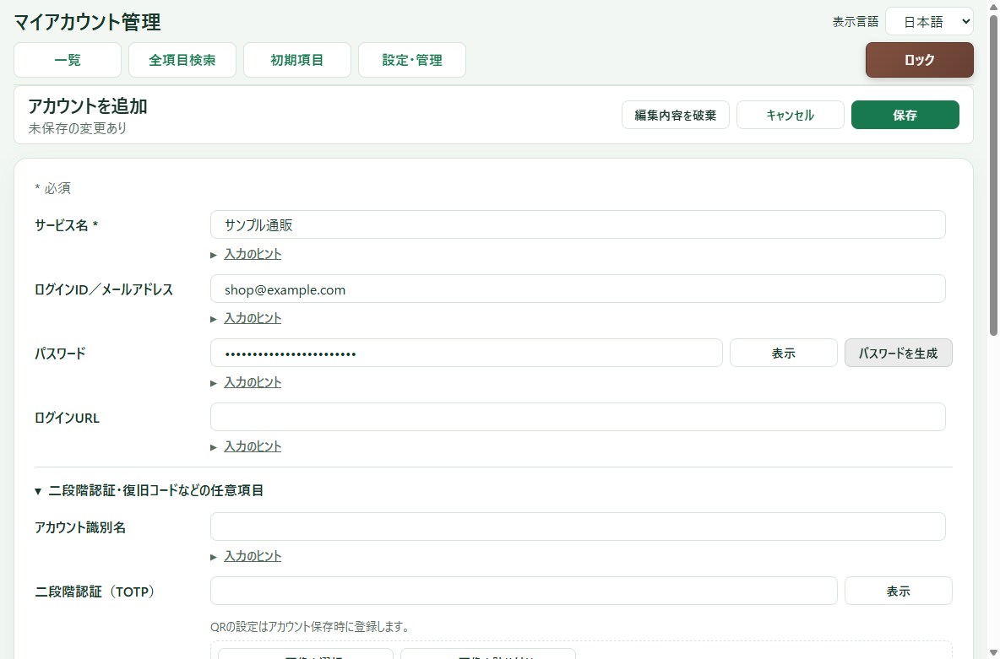
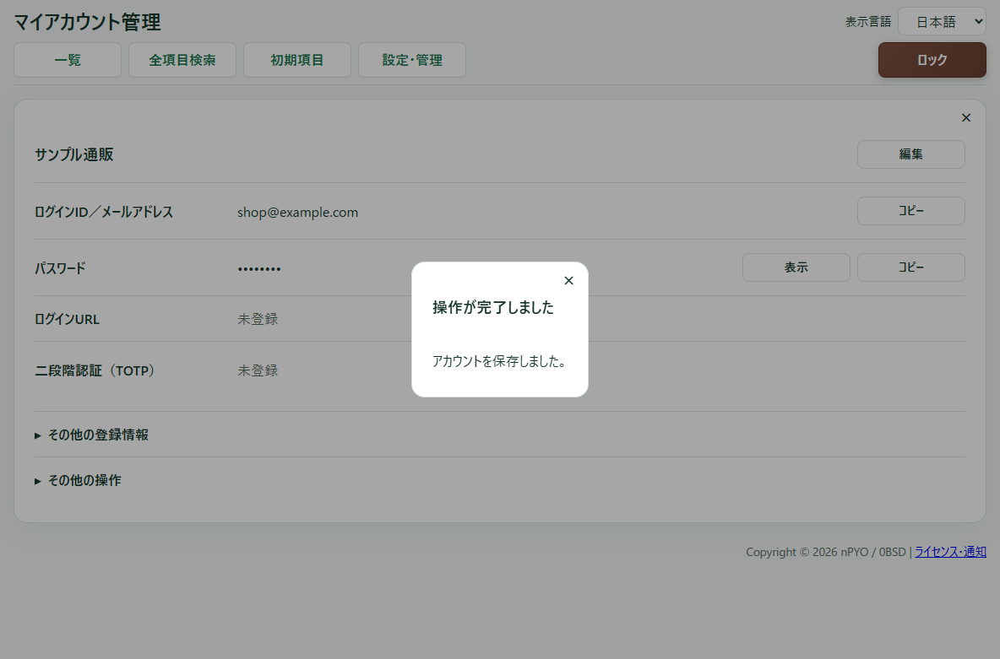

15パスワードを生成
パスワード欄へ、新しい24文字のパスワードを生成します。
手順一覧を開く（10手順）
1［パスワードを生成］を押す
編集画面でパスワード欄の右のボタンを押します。

2既存の値を置き換えるか選ぶ
やめる場合は［キャンセル］、生成する場合は［置き換え］を選びます。

3キャンセルした場合
確認の［キャンセル］で生成せず編集画面へ戻ります。この例は変更前の保存済み状態です。
4置き換える場合
もう一度生成を開いて［置き換え］を押すと、24文字の値を生成します。

5生成した値を保存する
完了表示を閉じ、［未保存の変更あり］を確認して［更新］を押します。

6更新完了を確認
「アカウントを保存しました。」を確認します。

7空欄から生成する場合
サービス名・IDを入力してから、空のパスワード欄の［パスワードを生成］を押します。

8空欄への生成結果
24文字を生成した表示を確認し、［×］で閉じます。

9保存前の内容を確認
生成されたパスワードは伏字で表示されます。新規登録では［保存］を押します。

10保存完了を確認
完了表示を確認します。
